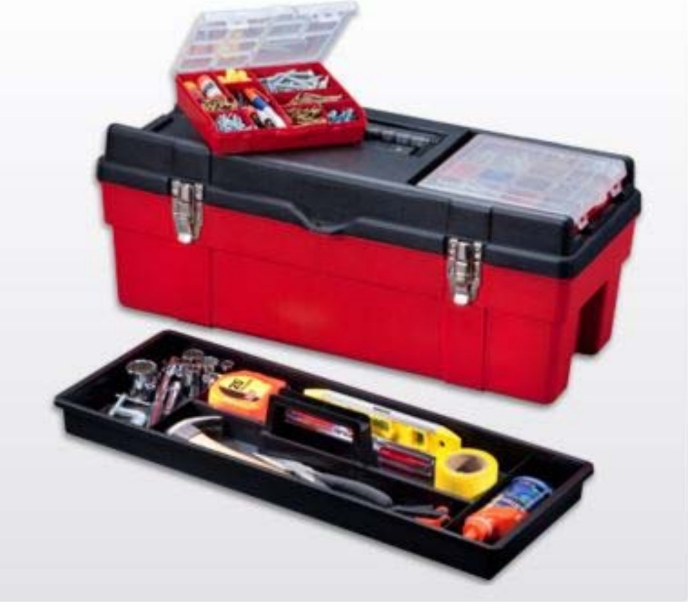

Doc no. MOC-TSB-14-13 // Vol. 14 No. 13 // Sep 17, 2014 // Fuel
26in Toolbox for CAT Tool Storage
New72457
MOC now has available a 26in toolbox to store any one of the available CAT tools with the hanging hook and service hose(s) attached (Part #'s 72450, 72460 & 74850). The toolbox comes with a removable shelf and 2 removable storage boxes to store loose fuel adapters with the tools.
What's new
Contact
For more information, contact the Machine & Equipment Department at 866.244.6621.

Part numbers
| Part No. | Description | Notes |
|---|---|---|
| 72457 | 26in Plastic Toolbox |